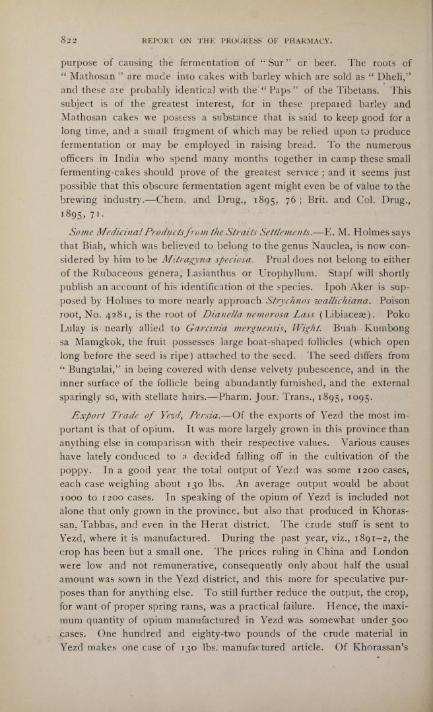

Report on the Progress of the Pharmacy: Some Medicinal Products from the Straits Settlements
822
REPORT ON THE PROGRESS OF PHARMACY.
…
Some Medicinal Products from the Straits Settlements — E. M. Holmes says that Biab, which was believed to belong to the genus Nauclea, is now considered by him to be Mitragyna speciosa. Prual does not belong to either of the Rubaceous genera, Lasianthus or Urophyllum. Stapf will shortly publish an account of his identification of the species. Ipoh Aker is supposed by Holmes to more nearly approach Strychnos wakkuchiana. Poison root, No. 4281, is the root of Dianella nemorosa Lass (Libiacee). Poko Lulay is nearly allied to Garcinia merguensis, Wight. Buah Kumbong sa Mamgkok, the fruit possesses large boat-shaped follicles (which open long before the seed is ripe) attached to the seed. The seed differs from “Bungtalai” in being covered with dense velvety pubescence, and in the inner surface of the follicle being abundantly furnished, and the external spargly so, with stellate haus.—Pharm, Jour. Trans., 1895, 1095.
Export Trade of Veot, Persia —Of the exports of Yezd the most im- portant is that of opium. It was more largely grown in this province than anything else in comparison with their respective values. Various causes have lately conduced to a decided falhng off in the cultivation of the poppy Ina good year the total output of Yezd was some 1200 cases, each case weighing about 130 Ibs. An average output would be about 1000 to 1200 cases. In speaking of the opium of Verd is included not alone that only grown in the province, but also that produced m Khoras- san, Tabbas, and even in the Herat district. ‘The crude stuff is sent to Yezd, where it is manufactured. During the past year, viz., 1891-2, the crop has been but a small one. ‘The prices ruhng in China and London were low and not remunerative, consequently only about half the usual amount was sown in the Yezd district, and this more for speculatwe pur- poses than for anything else. ‘To still further reduce the output, the crop, for want of proper spring rams, was a practical failure Hence, the maxi- mum quantity of opium manufactured in Yezd was somewhat under 500 cases. One hundred and eighty-two pounds of the crnde material in Yerd makes one case of 130 Ibs. manufactured article. Of Khorassan’s …
Updated: October 23, 2021
Created: January 1, 1895
attachments
- 🔖 BibTeX file: 1895americanpharmaceuticalassociation.meeting.bib
- can be imported into any citation manager
- 📕 PDF: 1895americanpharmaceuticalassociation.meeting.pdf
- may differ from original source document e.g. OCR added or redone, abridged to preserve only most relevant pages
- Auto-generated may contain errors
- 📑 Plain Text: 1895americanpharmaceuticalassociation.meeting.txt
- Auto-generated from PDF and may contain errors
-  download "1895americanpharmaceuticalassociation.meeting.jpg" full size
- 🧺 Did you know? You can download this entire website including all attachments from the github repository
{kind=link}